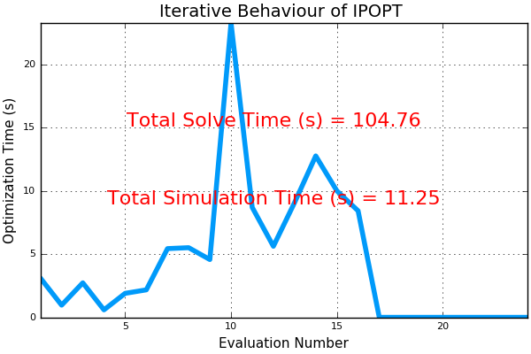

Closing the Loop¶
This is an example where the loop is being closed using the 3DOF vehicle model.
- In this simulation:
- The
VehicleModels.jlpackage is being used for the first time in closed loop. To do this: - The optimization is solved
- 0.5 s of the optimized control signals are sent to
VehicleModels.jl VehicleModels.jlsolves the differential equations using RK4- The solution is sampled at 100 points for simulation purposes
- The last point in the solution is used to constrain the initial points in the next optimization
- Repeat Steps 1 - 5
- The
- In the animation below, it can be seen that the vehicle stops moving. This is the point where:
- The optimization problem is infeasible and no solution is returned.
From this link:
Infeasible_Problem_Detected:
Console Message: EXIT: Converged to a point of local infeasibility. Problem may be infeasible.
The restoration phase converged to a point that is a minimizer for the constraint violation
(in the $ \ell_1$-norm), but is not feasible for the original problem. This indicates that
the problem may be infeasible (or at least that the algorithm is stuck at a locally infeasible
point). The returned point (the minimizer of the constraint violation) might help you to find
which constraint is causing the problem. If you believe that the NLP is feasible, it might help
to start the optimization from a different point.
The problem is infeasible because the upper bound that I set on time is 10s
It should be able to get to the goal in under about 7s according to previous studies
- I am not currently sure why we are seeing this (it is a recent development), but it seems like:
- there must be an issue with the way that I am updating time
- there may be a bug of some kind
- increase in time may also be due to the continued re-solving of the infeasible optimization problem
will be looking into these ideas more!

This is the solve time for IPOPT:
Investigation of Infeasibility when Closing the Loop¶
- A closer look at the “local point of infeasibility”:
- Creating Bugs:/
- Closing the Loop after the First Optimization
- Straight to Goal
- Single Static Obstacle
- Cold Start
- Prediction Horizon = 0.52 s
- Prediction Horizon = 1.0 s
- Prediction Horizon = 6.83 s
- Push Goal Out Further
- Expand Region Around Goal
- Include Obstacle Avoidance
- Adding Another Obstacle to Scenario where there is still an Issue
Solving NLP using KNITRO¶
- Problem is too large for student version of KNITRO
- Got KNITRO working for Single Obstacle Avoidance Case
- Again Looking At IPOPT for the Single Obstacle Case
- Comparing IPOPT and KNITRO for Single Obstacle Case
- Testing KNITRO with Trouble Case
- Again Looking At IPOPT for Trouble Case
- Comparing IPOPT and KNITRO for Trouble Case